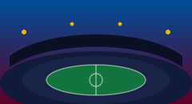

Since 1899
The story of Barça
More than a century of football, identity and reinvention — told through the moments that made the club what it is today.
Key moments
A timeline
-
1899
The club is founded
Swiss businessman Joan Gamper places a newspaper advert seeking players, and on 29 November 1899 Foot-Ball Club Barcelona is born.
-
1957
Camp Nou opens
The club inaugurates its new stadium on 24 September 1957. It would grow into one of the largest football grounds in Europe.
-
1968
“More than a club”
President Narcís de Carreras gives the club its enduring motto — Més que un club — capturing Barça's role as a symbol of Catalan identity.
-
1973
Cruyff arrives
Johan Cruyff signs from Ajax and inspires the 1973–74 league title, beginning a relationship that would reshape the club as player and coach.
-
1992
Champions of Europe
Cruyff's “Dream Team” wins the club's first European Cup at Wembley, beating Sampdoria 1–0 through a Ronald Koeman free-kick.
-
2009
The sextuple
Under Pep Guardiola, Barça win all six competitions entered in a single calendar year — an unprecedented feat in world football.
-
2015
A second treble
Luis Enrique's side, led by the Messi–Suárez–Neymar attack, sweep La Liga, the Copa del Rey and the Champions League.
-
Today
Rebuilding for the future
The Espai Barça project is redeveloping Spotify Camp Nou, while La Masia continues to graduate players into the first team.

Illustrations are original placeholders in the club colours. Swap in licensed photography before any public launch.
Identity
Why “more than a club”?
For many supporters the phrase reflects Barça's ties to Catalonia, its member-ownership, and a belief that how the game is played matters as much as the result.
That philosophy runs from the youth pitches of La Masia to the first team, and it is why the club is followed far beyond Spain. Learn more on the official FC Barcelona website.